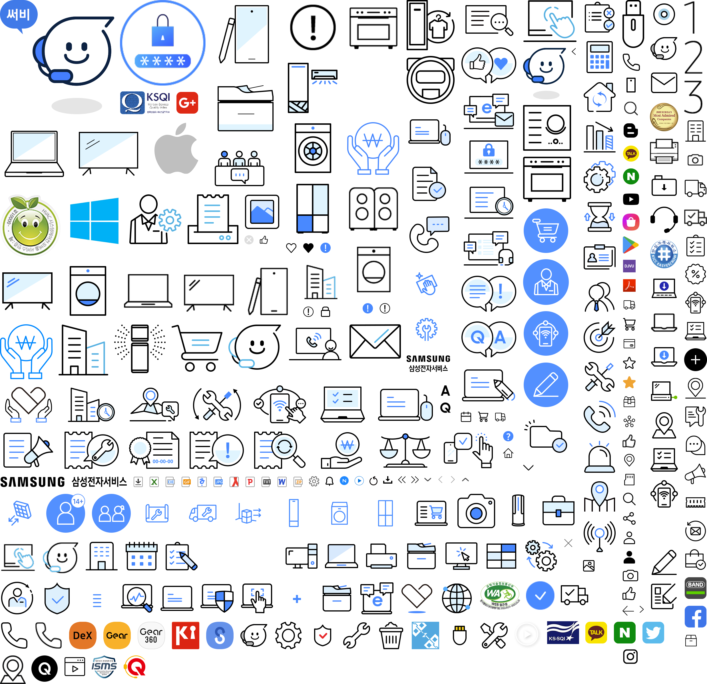

<!DOCTYPE html>
<html lang="en">
<head>
    <meta charset="UTF-8">
    <meta name="viewport" content="width=device-width, initial-scale=1.0">
    <title>Document</title>
    <style>
        .icon {

            background: url(img.png) no-repeat -752px -528px;
            width: 174px;
            height: 124px;

            /* 위 값을 수동으로 맞추는 너무 손이 많이간다. */
            /* http://www.spritecow.com/ 같은 스프라이트 도구를 이용하면 편하게 작업할수 있다. */
            /* 하지만 svg포맷의 등장과 발전으로 요즘은 사용빈도가 많이 떨어졌다. */
            
        }
    </style>
</head>
<body>
  <!--   스프라이트는 이미지로 사용하지 않는다. -->

  <div class="icon">

  </div>
</body>
</html>